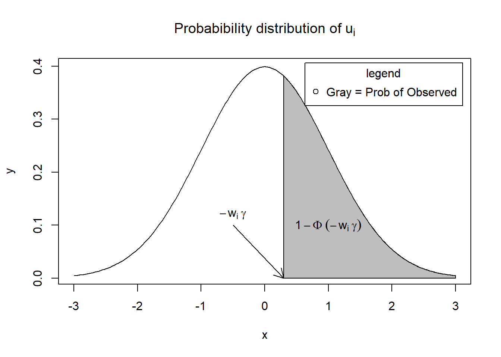

36.3 Implications for Causal Inference
Selection bias distorts the observed treatment effect, leading to biased estimates of causal relationships. Depending on the nature of selection, this bias can overestimate or underestimate the true effect:
- Negative Selection Bias (Mitigation-Based):
- The observed treatment group appears worse off than the control group.
- The treatment effect may be underestimated or even appear harmful.
- Example: Evaluating the effect of job training programs—unemployed individuals with the greatest difficulty finding jobs are most likely to enroll, leading to underestimated program benefits.
- Positive Selection Bias (Preference-Based):
- The observed treatment group appears better off than the control group.
- The treatment effect may be overestimated.
- Example: Evaluating the effect of private school education—students who attend private schools often come from wealthier families with greater academic support, making it difficult to isolate the true impact of the school itself.
36.3.1 Addressing Selection Bias
Several causal inference methods aim to correct for selection bias and estimate unbiased treatment effects:
- Randomized Controlled Trials (RCTs)
- Gold standard for causal inference, eliminating selection bias by randomly assigning treatment.
- Instrumental Variables (IV)
- Uses an external variable (instrument) that affects treatment assignment but is unrelated to the outcome, helping to isolate the causal effect.
- Difference-in-Differences (DiD)
- Compares changes in outcomes before and after treatment between a treatment and control group, assuming parallel trends.
- Matching Methods (e.g., Propensity Score Matching)
- Creates a synthetic control group by matching treated and untreated individuals with similar observable characteristics.
- Regression Discontinuity (RD)
- Exploits treatment assignment thresholds (e.g., age cutoffs for eligibility) to compare individuals just above and below the threshold.
- Synthetic Control Methods
- Constructs a weighted combination of control units to approximate the counterfactual outcome of the treated group.
Also known as sample selection or self-selection problem or incidental truncation.
The omitted variable is how people were selected into the sample
Some disciplines consider nonresponse bias and selection bias as sample selection.
- When unobservable factors that affect who is in the sample are independent of unobservable factors that affect the outcome, the sample selection is not endogenous. Hence, the sample selection is ignorable and estimator that ignores sample selection is still consistent.
- when the unobservable factors that affect who is included in the sample are correlated with the unobservable factors that affect the outcome, the sample selection is endogenous and not ignorable, because estimators that ignore endogenous sample selection are not consistent (we don’t know which part of the observable outcome is related to the causal relationship and which part is due to different people were selected for the treatment and control groups).
Assumptions: - The unobservables that affect the treatment selection and the outcome are jointly distributed as bivariate normal.
Notes:
If you don’t have strong exclusion restriction, identification is driven by the assumed non linearity in the functional form (through inverse Mills ratio). E.g., the estimate depend on the bivariate normal distribution of the error structure:
- With strong exclusion restriction for the covariate in the correction equation, the variation in this variable can help identify the control for selection
- With weak exclusion restriction, and the variable exists in both steps, it’s the assumed error structure that identifies the control for selection (J. Heckman and Navarro-Lozano 2004).
In management, Wolfolds and Siegel (2019) found that papers should have valid exclusion conditions, because without these, simulations show that results using the Heckman method are less reliable than those obtained with OLS.
There are differences between Heckman Sample Selection vs. Heckman-type correction
| Heckman Sample Selection Model | Heckman-Type Corrections | |
|---|---|---|
| When | Only observes one sample (treated), addressing selection bias directly. | Two samples are observed (treated and untreated), known as the control function approach. |
| Model | Probit | OLS (even for dummy endogenous variable) |
| Integration of 1st stage | Also include a term (called Inverse Mills ratio) besides the endogenous variable. | Decompose the endogenous variable to get the part that is uncorrelated with the error terms of the outcome equation. Either use the predicted endogenous variable directly or include the residual from the first-stage equation. |
| Advantages and Assumptions | Provides a direct test for endogeneity via the coefficient of the inverse Mills ratio but requires the assumption of joint normality of errors. | Does not require the assumption of joint normality, but can’t test for endogeneity directly. |
To deal with [Sample Selection], we can
- Randomization: participants are randomly selected into treatment and control.
- Instruments that determine the treatment status (i.e., treatment vs. control) but not the outcome (\(Y\))
- Functional form of the selection and outcome processes: originated from (J. J. Heckman 1976), later on generalize by (Amemiya 1984)
We have our main model
\[ \mathbf{y^* = xb + \epsilon} \]
However, the pattern of missingness (i.e., censored) is related to the unobserved (latent) process:
\[ \mathbf{z^* = w \gamma + u} \]
and
\[ z_i = \begin{cases} 1& \text{if } z_i^*>0 \\ 0&\text{if } z_i^*\le0\\ \end{cases} \]
Equivalently, \(z_i = 1\) (\(y_i\) is observed) when
\[ u_i \ge -w_i \gamma \]
Hence, the probability of observed \(y_i\) is
\[ \begin{aligned} P(u_i \ge -w_i \gamma) &= 1 - \Phi(-w_i \gamma) \\ &= \Phi(w_i \gamma) & \text{symmetry of the standard normal distribution} \end{aligned} \]
We will assume
- the error term of the selection \(\mathbf{u \sim N(0,I)}\)
- \(Var(u_i) = 1\) for identification purposes
Visually, \(P(u_i \ge -w_i \gamma)\) is the shaded area.
x = seq(-3, 3, length = 200)
y = dnorm(x, mean = 0, sd = 1)
plot(x,
y,
type = "l",
main = bquote("Probabibility distribution of" ~ u[i]))
x = seq(0.3, 3, length = 100)
y = dnorm(x, mean = 0, sd = 1)
polygon(c(0.3, x, 3), c(0, y, 0), col = "gray")
text(1, 0.1, bquote(1 - Phi ~ (-w[i] ~ gamma)))
arrows(-0.5, 0.1, 0.3, 0, length = .15)
text(-0.5, 0.12, bquote(-w[i] ~ gamma))
legend(
"topright",
"Gray = Prob of Observed",
pch = 1,
title = "legend",
inset = .02
)
Hence in our observed model, we see
\[\begin{equation} y_i = x_i\beta + \epsilon_i \text{when $z_i=1$} \end{equation}\]and the joint distribution of the selection model (\(u_i\)), and the observed equation (\(\epsilon_i\)) as
\[ \left[ \begin{array} {c} u \\ \epsilon \\ \end{array} \right] \sim^{iid}N \left( \left[ \begin{array} {c} 0 \\ 0 \\ \end{array} \right], \left[ \begin{array} {cc} 1 & \rho \\ \rho & \sigma^2_{\epsilon} \\ \end{array} \right] \right) \]
The relation between the observed and selection models:
\[ \begin{aligned} E(y_i | y_i \text{ observed}) &= E(y_i| z^*>0) \\ &= E(y_i| -w_i \gamma) \\ &= \mathbf{x}_i \beta + E(\epsilon_i | u_i > -w_i \gamma) \\ &= \mathbf{x}_i \beta + \rho \sigma_\epsilon \frac{\phi(w_i \gamma)}{\Phi(w_i \gamma)} \end{aligned} \]
where \(\frac{\phi(w_i \gamma)}{\Phi(w_i \gamma)}\) is the Inverse Mills Ratio. and \(\rho \sigma_\epsilon \frac{\phi(w_i \gamma)}{\Phi(w_i \gamma)} \ge 0\)
A property of IMR: Its derivative is: \(IMR'(x) = -x IMR(x) - IMR(x)^2\)
Great visualization of special cases of correlation patterns among data and errors by professor Rob Hick
Note:
(Bareinboim and Pearl 2014) is an excellent summary of cases that we can still do causal inference in case of selection bias. I’ll try to summarize their idea here:
Let \(X\) be an action, \(Y\) be an outcome, and S be a binary indicator of entry into the data pool where (\(S = 1 =\) in the sample, \(S = 0 =\) out of sample) and Q be the conditional distribution \(Q = P(y|x)\).
Usually we want to understand , but because of \(S\), we only have \(P(y, x|S = 1)\). Hence, we’d like to recover \(P(y|x)\) from \(P(y, x|S = 1)\)
- If both X and Y affect S, we can’t unbiasedly estimate \(P(y|x)\)
In the case of Omitted variable bias (\(U\)) and sample selection bias (\(S\)), you have unblocked extraneous “flow” of information between X and \(Y\), which causes spurious correlation for \(X\) and \(Y\). Traditionally, we would recover \(Q\) by parametric assumption of
- The data generating process (e.g., Heckman 2-step)
- Type of data-generating model (e..g, treatment-dependent or outcome-dependent)
- Selection’s probability \(P(S = 1|P a_s)\) with non-parametrically based causal graphical models, the authors proposed more robust way to model misspecification regardless of the type of data-generating model, and do not require selection’s probability. Hence, you can recover Q
- Without external data
- With external data
- Causal effects with the Selection-backdoor criterion
36.3.2 Tobit-2
also known as Heckman’s standard sample selection model
Assumption: joint normality of the errors
Data here is taken from Mroz (1984).
We want to estimate the log(wage) for married women, with education, experience, experience squared, and a dummy variable for living in a big city. But we can only observe the wage for women who are working, which means a lot of married women in 1975 who were out of the labor force are unaccounted for. Hence, an OLS estimate of the wage equation would be bias due to sample selection. Since we have data on non-participants (i.e., those who are not working for pay), we can correct for the selection process.
The Tobit-2 estimates are consistent
36.3.2.1 Example 1
library(sampleSelection)
library(dplyr)
# 1975 data on married women’s pay and labor-force participation
# from the Panel Study of Income Dynamics (PSID)
data("Mroz87")
head(Mroz87)
#> lfp hours kids5 kids618 age educ wage repwage hushrs husage huseduc huswage
#> 1 1 1610 1 0 32 12 3.3540 2.65 2708 34 12 4.0288
#> 2 1 1656 0 2 30 12 1.3889 2.65 2310 30 9 8.4416
#> 3 1 1980 1 3 35 12 4.5455 4.04 3072 40 12 3.5807
#> 4 1 456 0 3 34 12 1.0965 3.25 1920 53 10 3.5417
#> 5 1 1568 1 2 31 14 4.5918 3.60 2000 32 12 10.0000
#> 6 1 2032 0 0 54 12 4.7421 4.70 1040 57 11 6.7106
#> faminc mtr motheduc fatheduc unem city exper nwifeinc wifecoll huscoll
#> 1 16310 0.7215 12 7 5.0 0 14 10.910060 FALSE FALSE
#> 2 21800 0.6615 7 7 11.0 1 5 19.499981 FALSE FALSE
#> 3 21040 0.6915 12 7 5.0 0 15 12.039910 FALSE FALSE
#> 4 7300 0.7815 7 7 5.0 0 6 6.799996 FALSE FALSE
#> 5 27300 0.6215 12 14 9.5 1 7 20.100058 TRUE FALSE
#> 6 19495 0.6915 14 7 7.5 1 33 9.859054 FALSE FALSE
Mroz87 = Mroz87 %>%
mutate(kids = kids5 + kids618)
library(nnet)
library(ggplot2)
library(reshape2)2-stage Heckman’s model:
- probit equation estimates the selection process (who is in the labor force?)
- the results from 1st stage are used to construct a variable that captures the selection effect in the wage equation. This correction variable is called the inverse Mills ratio.
# OLS: log wage regression on LF participants only
ols1 = lm(log(wage) ~ educ + exper + I(exper ^ 2) + city,
data = subset(Mroz87, lfp == 1))
# Heckman's Two-step estimation with LFP selection equation
heck1 = heckit(
selection = lfp ~ age + I(age ^ 2) + kids + huswage + educ,
# the selection process, l
# fp = 1 if the woman is participating in the labor force
outcome = log(wage) ~ educ + exper + I(exper ^ 2) + city,
data = Mroz87
)
summary(heck1$probit)
#> --------------------------------------------
#> Probit binary choice model/Maximum Likelihood estimation
#> Newton-Raphson maximisation, 4 iterations
#> Return code 1: gradient close to zero (gradtol)
#> Log-Likelihood: -482.8212
#> Model: Y == '1' in contrary to '0'
#> 753 observations (325 'negative' and 428 'positive') and 6 free parameters (df = 747)
#> Estimates:
#> Estimate Std. error t value Pr(> t)
#> XS(Intercept) -4.18146681 1.40241567 -2.9816 0.002867 **
#> XSage 0.18608901 0.06517476 2.8552 0.004301 **
#> XSI(age^2) -0.00241491 0.00075857 -3.1835 0.001455 **
#> XSkids -0.14955977 0.03825079 -3.9100 9.230e-05 ***
#> XShuswage -0.04303635 0.01220791 -3.5253 0.000423 ***
#> XSeduc 0.12502818 0.02277645 5.4894 4.034e-08 ***
#> ---
#> Signif. codes: 0 '***' 0.001 '**' 0.01 '*' 0.05 '.' 0.1 ' ' 1
#> Significance test:
#> chi2(5) = 64.10407 (p=1.719042e-12)
#> --------------------------------------------
summary(heck1$lm)
#>
#> Call:
#> lm(formula = YO ~ -1 + XO + imrData$IMR1, subset = YS == 1, weights = weightsNoNA)
#>
#> Residuals:
#> Min 1Q Median 3Q Max
#> -3.09494 -0.30953 0.05341 0.36530 2.34770
#>
#> Coefficients:
#> Estimate Std. Error t value Pr(>|t|)
#> XO(Intercept) -0.6143381 0.3768796 -1.630 0.10383
#> XOeduc 0.1092363 0.0197062 5.543 5.24e-08 ***
#> XOexper 0.0419205 0.0136176 3.078 0.00222 **
#> XOI(exper^2) -0.0008226 0.0004059 -2.026 0.04335 *
#> XOcity 0.0510492 0.0692414 0.737 0.46137
#> imrData$IMR1 0.0551177 0.2111916 0.261 0.79423
#> ---
#> Signif. codes: 0 '***' 0.001 '**' 0.01 '*' 0.05 '.' 0.1 ' ' 1
#>
#> Residual standard error: 0.6674 on 422 degrees of freedom
#> Multiple R-squared: 0.7734, Adjusted R-squared: 0.7702
#> F-statistic: 240 on 6 and 422 DF, p-value: < 2.2e-16Use only variables that affect the selection process in the selection equation. Technically, the selection equation and the equation of interest could have the same set of regressors. But it is not recommended because we should only use variables (or at least one) in the selection equation that affect the selection process, but not the wage process (i.e., instruments). Here, variable kids fulfill that role: women with kids may be more likely to stay home, but working moms with kids would not have their wages change.
Alternatively,
# ML estimation of selection model
ml1 = selection(
selection = lfp ~ age + I(age ^ 2) + kids + huswage + educ,
outcome = log(wage) ~ educ + exper + I(exper ^ 2) + city,
data = Mroz87
)
summary(ml1)
#> --------------------------------------------
#> Tobit 2 model (sample selection model)
#> Maximum Likelihood estimation
#> Newton-Raphson maximisation, 3 iterations
#> Return code 8: successive function values within relative tolerance limit (reltol)
#> Log-Likelihood: -914.0777
#> 753 observations (325 censored and 428 observed)
#> 13 free parameters (df = 740)
#> Probit selection equation:
#> Estimate Std. Error t value Pr(>|t|)
#> (Intercept) -4.1484037 1.4109302 -2.940 0.003382 **
#> age 0.1842132 0.0658041 2.799 0.005253 **
#> I(age^2) -0.0023925 0.0007664 -3.122 0.001868 **
#> kids -0.1488158 0.0384888 -3.866 0.000120 ***
#> huswage -0.0434253 0.0123229 -3.524 0.000451 ***
#> educ 0.1255639 0.0229229 5.478 5.91e-08 ***
#> Outcome equation:
#> Estimate Std. Error t value Pr(>|t|)
#> (Intercept) -0.5814781 0.3052031 -1.905 0.05714 .
#> educ 0.1078481 0.0172998 6.234 7.63e-10 ***
#> exper 0.0415752 0.0133269 3.120 0.00188 **
#> I(exper^2) -0.0008125 0.0003974 -2.044 0.04129 *
#> city 0.0522990 0.0682652 0.766 0.44385
#> Error terms:
#> Estimate Std. Error t value Pr(>|t|)
#> sigma 0.66326 0.02309 28.729 <2e-16 ***
#> rho 0.05048 0.23169 0.218 0.828
#> ---
#> Signif. codes: 0 '***' 0.001 '**' 0.01 '*' 0.05 '.' 0.1 ' ' 1
#> --------------------------------------------
# summary(ml1$twoStep)Manual
myprob <- probit(lfp ~ age + I( age^2 ) + kids + huswage + educ,
# x = TRUE,
# iterlim = 30,
data = Mroz87)
summary(myprob)
#> --------------------------------------------
#> Probit binary choice model/Maximum Likelihood estimation
#> Newton-Raphson maximisation, 4 iterations
#> Return code 1: gradient close to zero (gradtol)
#> Log-Likelihood: -482.8212
#> Model: Y == '1' in contrary to '0'
#> 753 observations (325 'negative' and 428 'positive') and 6 free parameters (df = 747)
#> Estimates:
#> Estimate Std. error t value Pr(> t)
#> (Intercept) -4.18146681 1.40241567 -2.9816 0.002867 **
#> age 0.18608901 0.06517476 2.8552 0.004301 **
#> I(age^2) -0.00241491 0.00075857 -3.1835 0.001455 **
#> kids -0.14955977 0.03825079 -3.9100 9.230e-05 ***
#> huswage -0.04303635 0.01220791 -3.5253 0.000423 ***
#> educ 0.12502818 0.02277645 5.4894 4.034e-08 ***
#> ---
#> Signif. codes: 0 '***' 0.001 '**' 0.01 '*' 0.05 '.' 0.1 ' ' 1
#> Significance test:
#> chi2(5) = 64.10407 (p=1.719042e-12)
#> --------------------------------------------
imr <- invMillsRatio(myprob)
Mroz87$IMR1 <- imr$IMR1
manually_est <- lm(log(wage) ~ educ + exper + I( exper^2 ) + city + IMR1,
data = Mroz87,
subset = (lfp == 1))
summary(manually_est)
#>
#> Call:
#> lm(formula = log(wage) ~ educ + exper + I(exper^2) + city + IMR1,
#> data = Mroz87, subset = (lfp == 1))
#>
#> Residuals:
#> Min 1Q Median 3Q Max
#> -3.09494 -0.30953 0.05341 0.36530 2.34770
#>
#> Coefficients:
#> Estimate Std. Error t value Pr(>|t|)
#> (Intercept) -0.6143381 0.3768796 -1.630 0.10383
#> educ 0.1092363 0.0197062 5.543 5.24e-08 ***
#> exper 0.0419205 0.0136176 3.078 0.00222 **
#> I(exper^2) -0.0008226 0.0004059 -2.026 0.04335 *
#> city 0.0510492 0.0692414 0.737 0.46137
#> IMR1 0.0551177 0.2111916 0.261 0.79423
#> ---
#> Signif. codes: 0 '***' 0.001 '**' 0.01 '*' 0.05 '.' 0.1 ' ' 1
#>
#> Residual standard error: 0.6674 on 422 degrees of freedom
#> Multiple R-squared: 0.1582, Adjusted R-squared: 0.1482
#> F-statistic: 15.86 on 5 and 422 DF, p-value: 2.505e-14Similarly,
probit_selection <-
glm(lfp ~ age + I( age^2 ) + kids + huswage + educ,
data = Mroz87,
family = binomial(link = 'probit'))
# library(fixest)
# probit_selection <-
# fixest::feglm(lfp ~ age + I( age^2 ) + kids + huswage + educ,
# data = Mroz87,
# family = binomial(link = 'probit'))
probit_lp <- -predict(probit_selection)
inv_mills <- dnorm(probit_lp) / (1 - pnorm(probit_lp))
Mroz87$inv_mills <- inv_mills
probit_outcome <-
glm(
log(wage) ~ educ + exper + I(exper ^ 2) + city + inv_mills,
data = Mroz87,
subset = (lfp == 1)
)
summary(probit_outcome)
#>
#> Call:
#> glm(formula = log(wage) ~ educ + exper + I(exper^2) + city +
#> inv_mills, data = Mroz87, subset = (lfp == 1))
#>
#> Coefficients:
#> Estimate Std. Error t value Pr(>|t|)
#> (Intercept) -0.6143383 0.3768798 -1.630 0.10383
#> educ 0.1092363 0.0197062 5.543 5.24e-08 ***
#> exper 0.0419205 0.0136176 3.078 0.00222 **
#> I(exper^2) -0.0008226 0.0004059 -2.026 0.04335 *
#> city 0.0510492 0.0692414 0.737 0.46137
#> inv_mills 0.0551179 0.2111918 0.261 0.79423
#> ---
#> Signif. codes: 0 '***' 0.001 '**' 0.01 '*' 0.05 '.' 0.1 ' ' 1
#>
#> (Dispersion parameter for gaussian family taken to be 0.4454809)
#>
#> Null deviance: 223.33 on 427 degrees of freedom
#> Residual deviance: 187.99 on 422 degrees of freedom
#> AIC: 876.49
#>
#> Number of Fisher Scoring iterations: 2library("stargazer")
library("Mediana")
library("plm")
# function to calculate corrected SEs for regression
cse = function(reg) {
rob = sqrt(diag(vcovHC(reg, type = "HC1")))
return(rob)
}
# stargazer table
stargazer(
# ols1,
heck1,
ml1,
# manually_est,
se = list(cse(ols1), NULL, NULL),
title = "Married women's wage regressions",
type = "text",
df = FALSE,
digits = 4,
selection.equation = T
)
#>
#> Married women's wage regressions
#> ===================================================
#> Dependent variable:
#> -------------------------------
#> lfp
#> Heckman selection
#> selection
#> (1) (2)
#> ---------------------------------------------------
#> age 0.1861*** 0.1842***
#> (0.0658)
#>
#> I(age2) -0.0024 -0.0024***
#> (0.0008)
#>
#> kids -0.1496*** -0.1488***
#> (0.0385)
#>
#> huswage -0.0430 -0.0434***
#> (0.0123)
#>
#> educ 0.1250 0.1256***
#> (0.0130) (0.0229)
#>
#> Constant -4.1815*** -4.1484***
#> (0.2032) (1.4109)
#>
#> ---------------------------------------------------
#> Observations 753 753
#> R2 0.1582
#> Adjusted R2 0.1482
#> Log Likelihood -914.0777
#> rho 0.0830 0.0505 (0.2317)
#> Inverse Mills Ratio 0.0551 (0.2099)
#> ===================================================
#> Note: *p<0.1; **p<0.05; ***p<0.01
stargazer(
ols1,
# heck1,
# ml1,
manually_est,
se = list(cse(ols1), NULL, NULL),
title = "Married women's wage regressions",
type = "text",
df = FALSE,
digits = 4,
selection.equation = T
)
#>
#> Married women's wage regressions
#> ================================================
#> Dependent variable:
#> ----------------------------
#> log(wage)
#> (1) (2)
#> ------------------------------------------------
#> educ 0.1057*** 0.1092***
#> (0.0130) (0.0197)
#>
#> exper 0.0411*** 0.0419***
#> (0.0154) (0.0136)
#>
#> I(exper2) -0.0008* -0.0008**
#> (0.0004) (0.0004)
#>
#> city 0.0542 0.0510
#> (0.0653) (0.0692)
#>
#> IMR1 0.0551
#> (0.2112)
#>
#> Constant -0.5308*** -0.6143
#> (0.2032) (0.3769)
#>
#> ------------------------------------------------
#> Observations 428 428
#> R2 0.1581 0.1582
#> Adjusted R2 0.1501 0.1482
#> Residual Std. Error 0.6667 0.6674
#> F Statistic 19.8561*** 15.8635***
#> ================================================
#> Note: *p<0.1; **p<0.05; ***p<0.01Rho is an estimate of the correlation of the errors between the selection and wage equations. In the lower panel, the estimated coefficient on the inverse Mills ratio is given for the Heckman model. The fact that it is not statistically different from zero is consistent with the idea that selection bias was not a serious problem in this case.
If the estimated coefficient of the inverse Mills ratio in the Heckman model is not statistically different from zero, then selection bias was not a serious problem.
36.3.2.2 Example 2
This code is from R package sampleSelection
set.seed(0)
library("sampleSelection")
library("mvtnorm")
# bivariate normal disturbances
eps <-
rmvnorm(500, c(0, 0), matrix(c(1, -0.7, -0.7, 1), 2, 2))
# uniformly distributed explanatory variable
# (vectors of explanatory variables for the selection)
xs <- runif(500)
# probit data generating process
ys <- xs + eps[, 1] > 0
# vectors of explanatory variables for outcome equation
xo <- runif(500)
yoX <- xo + eps[, 2] # latent outcome
yo <- yoX * (ys > 0) # observable outcome
# true intercepts = 0 and our true slopes = 1
# xs and xo are independent.
# Hence, exclusion restriction is fulfilled
summary(selection(ys ~ xs, yo ~ xo))
#> --------------------------------------------
#> Tobit 2 model (sample selection model)
#> Maximum Likelihood estimation
#> Newton-Raphson maximisation, 5 iterations
#> Return code 1: gradient close to zero (gradtol)
#> Log-Likelihood: -712.3163
#> 500 observations (172 censored and 328 observed)
#> 6 free parameters (df = 494)
#> Probit selection equation:
#> Estimate Std. Error t value Pr(>|t|)
#> (Intercept) -0.2228 0.1081 -2.061 0.0399 *
#> xs 1.3377 0.2014 6.642 8.18e-11 ***
#> Outcome equation:
#> Estimate Std. Error t value Pr(>|t|)
#> (Intercept) -0.0002265 0.1294178 -0.002 0.999
#> xo 0.7299070 0.1635925 4.462 1.01e-05 ***
#> Error terms:
#> Estimate Std. Error t value Pr(>|t|)
#> sigma 0.9190 0.0574 16.009 < 2e-16 ***
#> rho -0.5392 0.1521 -3.544 0.000431 ***
#> ---
#> Signif. codes: 0 '***' 0.001 '**' 0.01 '*' 0.05 '.' 0.1 ' ' 1
#> --------------------------------------------without the exclusion restriction, we generate yo using xs instead of xo.
yoX <- xs + eps[,2]
yo <- yoX*(ys > 0)
summary(selection(ys ~ xs, yo ~ xs))
#> --------------------------------------------
#> Tobit 2 model (sample selection model)
#> Maximum Likelihood estimation
#> Newton-Raphson maximisation, 14 iterations
#> Return code 8: successive function values within relative tolerance limit (reltol)
#> Log-Likelihood: -712.8298
#> 500 observations (172 censored and 328 observed)
#> 6 free parameters (df = 494)
#> Probit selection equation:
#> Estimate Std. Error t value Pr(>|t|)
#> (Intercept) -0.1984 0.1114 -1.781 0.0756 .
#> xs 1.2907 0.2085 6.191 1.25e-09 ***
#> Outcome equation:
#> Estimate Std. Error t value Pr(>|t|)
#> (Intercept) -0.5499 0.5644 -0.974 0.33038
#> xs 1.3987 0.4482 3.120 0.00191 **
#> Error terms:
#> Estimate Std. Error t value Pr(>|t|)
#> sigma 0.85091 0.05352 15.899 <2e-16 ***
#> rho -0.13226 0.72684 -0.182 0.856
#> ---
#> Signif. codes: 0 '***' 0.001 '**' 0.01 '*' 0.05 '.' 0.1 ' ' 1
#> --------------------------------------------We can see that our estimates are still unbiased but standard errors are substantially larger. The exclusion restriction (i.e., independent information about the selection process) has a certain identifying power that we desire. Hence, it’s better to have different set of variable for the selection process from the interested equation. Without the exclusion restriction, we solely rely on the functional form identification.
36.3.3 Tobit-5
Also known as the switching regression model
Condition: There is at least one variable in X in the selection process not included in the observed process. Used when there are separate models for participants, and non-participants.
set.seed(0)
vc <- diag(3)
vc[lower.tri(vc)] <- c(0.9, 0.5, 0.1)
vc[upper.tri(vc)] <- vc[lower.tri(vc)]
# 3 disturbance vectors by a 3-dimensional normal distribution
eps <- rmvnorm(500, c(0,0,0), vc)
xs <- runif(500) # uniformly distributed on [0, 1]
ys <- xs + eps[,1] > 0
xo1 <- runif(500) # uniformly distributed on [0, 1]
yo1 <- xo1 + eps[,2]
xo2 <- runif(500) # uniformly distributed on [0, 1]
yo2 <- xo2 + eps[,3]exclusion restriction is fulfilled when \(x\)’s are independent.
# one selection equation and a list of two outcome equations
summary(selection(ys~xs, list(yo1 ~ xo1, yo2 ~ xo2)))
#> --------------------------------------------
#> Tobit 5 model (switching regression model)
#> Maximum Likelihood estimation
#> Newton-Raphson maximisation, 11 iterations
#> Return code 1: gradient close to zero (gradtol)
#> Log-Likelihood: -895.8201
#> 500 observations: 172 selection 1 (FALSE) and 328 selection 2 (TRUE)
#> 10 free parameters (df = 490)
#> Probit selection equation:
#> Estimate Std. Error t value Pr(>|t|)
#> (Intercept) -0.1550 0.1051 -1.474 0.141
#> xs 1.1408 0.1785 6.390 3.86e-10 ***
#> Outcome equation 1:
#> Estimate Std. Error t value Pr(>|t|)
#> (Intercept) 0.02708 0.16395 0.165 0.869
#> xo1 0.83959 0.14968 5.609 3.4e-08 ***
#> Outcome equation 2:
#> Estimate Std. Error t value Pr(>|t|)
#> (Intercept) 0.1583 0.1885 0.840 0.401
#> xo2 0.8375 0.1707 4.908 1.26e-06 ***
#> Error terms:
#> Estimate Std. Error t value Pr(>|t|)
#> sigma1 0.93191 0.09211 10.118 <2e-16 ***
#> sigma2 0.90697 0.04434 20.455 <2e-16 ***
#> rho1 0.88988 0.05353 16.623 <2e-16 ***
#> rho2 0.17695 0.33139 0.534 0.594
#> ---
#> Signif. codes: 0 '***' 0.001 '**' 0.01 '*' 0.05 '.' 0.1 ' ' 1
#> --------------------------------------------All the estimates are close to the true values.
Example of functional form misspecification
set.seed(5)
eps <- rmvnorm(1000, rep(0, 3), vc)
eps <- eps^2 - 1 # subtract 1 in order to get the mean zero disturbances
# interval [−1, 0] to get an asymmetric distribution over observed choices
xs <- runif(1000, -1, 0)
ys <- xs + eps[,1] > 0
xo1 <- runif(1000)
yo1 <- xo1 + eps[,2]
xo2 <- runif(1000)
yo2 <- xo2 + eps[,3]
summary(selection(ys~xs, list(yo1 ~ xo1, yo2 ~ xo2), iterlim=20))
#> --------------------------------------------
#> Tobit 5 model (switching regression model)
#> Maximum Likelihood estimation
#> Newton-Raphson maximisation, 4 iterations
#> Return code 3: Last step could not find a value above the current.
#> Boundary of parameter space?
#> Consider switching to a more robust optimisation method temporarily.
#> Log-Likelihood: -1665.936
#> 1000 observations: 760 selection 1 (FALSE) and 240 selection 2 (TRUE)
#> 10 free parameters (df = 990)
#> Probit selection equation:
#> Estimate Std. Error t value Pr(>|t|)
#> (Intercept) -0.53698 0.05808 -9.245 < 2e-16 ***
#> xs 0.31268 0.09395 3.328 0.000906 ***
#> Outcome equation 1:
#> Estimate Std. Error t value Pr(>|t|)
#> (Intercept) -0.70679 0.03573 -19.78 <2e-16 ***
#> xo1 0.91603 0.05626 16.28 <2e-16 ***
#> Outcome equation 2:
#> Estimate Std. Error t value Pr(>|t|)
#> (Intercept) 0.1446 NaN NaN NaN
#> xo2 1.1196 0.5014 2.233 0.0258 *
#> Error terms:
#> Estimate Std. Error t value Pr(>|t|)
#> sigma1 0.67770 0.01760 38.50 <2e-16 ***
#> sigma2 2.31432 0.07615 30.39 <2e-16 ***
#> rho1 -0.97137 NaN NaN NaN
#> rho2 0.17039 NaN NaN NaN
#> ---
#> Signif. codes: 0 '***' 0.001 '**' 0.01 '*' 0.05 '.' 0.1 ' ' 1
#> --------------------------------------------Although we still have an exclusion restriction (xo1 and xo2 are independent), we now have problems with the intercepts (i.e., they are statistically significantly different from the true values zero), and convergence problems.
If we don’t have the exclusion restriction, we will have a larger variance of xs
set.seed(6)
xs <- runif(1000, -1, 1)
ys <- xs + eps[,1] > 0
yo1 <- xs + eps[,2]
yo2 <- xs + eps[,3]
summary(tmp <- selection(ys~xs, list(yo1 ~ xs, yo2 ~ xs), iterlim=20))
#> --------------------------------------------
#> Tobit 5 model (switching regression model)
#> Maximum Likelihood estimation
#> Newton-Raphson maximisation, 16 iterations
#> Return code 8: successive function values within relative tolerance limit (reltol)
#> Log-Likelihood: -1936.431
#> 1000 observations: 626 selection 1 (FALSE) and 374 selection 2 (TRUE)
#> 10 free parameters (df = 990)
#> Probit selection equation:
#> Estimate Std. Error t value Pr(>|t|)
#> (Intercept) -0.3528 0.0424 -8.321 2.86e-16 ***
#> xs 0.8354 0.0756 11.050 < 2e-16 ***
#> Outcome equation 1:
#> Estimate Std. Error t value Pr(>|t|)
#> (Intercept) -0.55448 0.06339 -8.748 <2e-16 ***
#> xs 0.81764 0.06048 13.519 <2e-16 ***
#> Outcome equation 2:
#> Estimate Std. Error t value Pr(>|t|)
#> (Intercept) 0.6457 0.4994 1.293 0.196
#> xs 0.3520 0.3197 1.101 0.271
#> Error terms:
#> Estimate Std. Error t value Pr(>|t|)
#> sigma1 0.59187 0.01853 31.935 <2e-16 ***
#> sigma2 1.97257 0.07228 27.289 <2e-16 ***
#> rho1 0.15568 0.15914 0.978 0.328
#> rho2 -0.01541 0.23370 -0.066 0.947
#> ---
#> Signif. codes: 0 '***' 0.001 '**' 0.01 '*' 0.05 '.' 0.1 ' ' 1
#> --------------------------------------------Usually it will not converge. Even if it does, the results may be seriously biased.
Note
The log-likelihood function of the models might not be globally concave. Hence, it might not converge, or converge to a local maximum. To combat this, we can use
- Different starting value
- Different maximization methods.
- refer to [Non-linear Least Squares] for suggestions.
36.3.3.0.1 Pattern-Mixture Models
- compared to the Heckman’s model where it assumes the value of the missing data is predetermined, pattern-mixture models assume missingness affect the distribution of variable of interest (e.g., Y)
- To read more, you can check NCSU, stefvanbuuren.